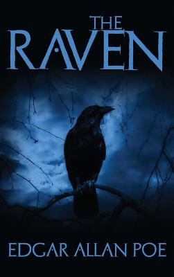

The Raven
The Raven is a narrative poem by American writer Edgar Allan Poe. First published in January 1845, the poem is often noted for its musicality, stylized language, and supernatural atmosphere. It tells of a talking raven's mysterious visit to a distraught lover, tracing the man's slow descent into madness. The lover, often identified as a student, is lamenting the loss of his love, Lenore. Sitting on a bust of Pallas, the raven seems to further distress the protagonist with its constant repetition of the word "Nevermore". The poem makes use of folk, mythological, religious, and classical references. Poe claimed to have written the poem logically and methodically, with the intention to create a poem that would appeal to both critical and popular tastes, as he explained in his 1846 follow-up essay, "The Philosophy of Composition". The poem was inspired in part by a talking raven in the novel Barnaby Rudge: A Tale of the Riots of Eighty by Charles Dickens. Poe borrows the complex rhythm and meter of Elizabeth Barrett's poem "Lady Geraldine's Courtship", and makes use of internal rhyme as well as alliteration througThe Raven was first attributed to Poe in print in the New York Evening Mirror on January 29, 1845. Its publication made Poe popular in his lifetime, although it did not bring him much financial success. The poem was soon reprinted, parodied, and illustrated. Critical opinion is divided as to the poem's literary status, but it nevertheless remains one of the most famous poems ever written.